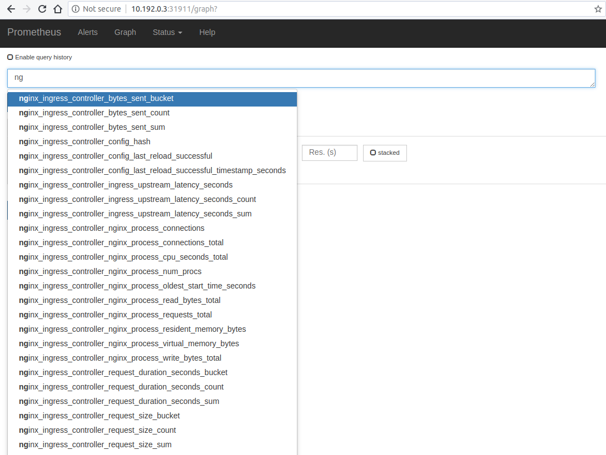
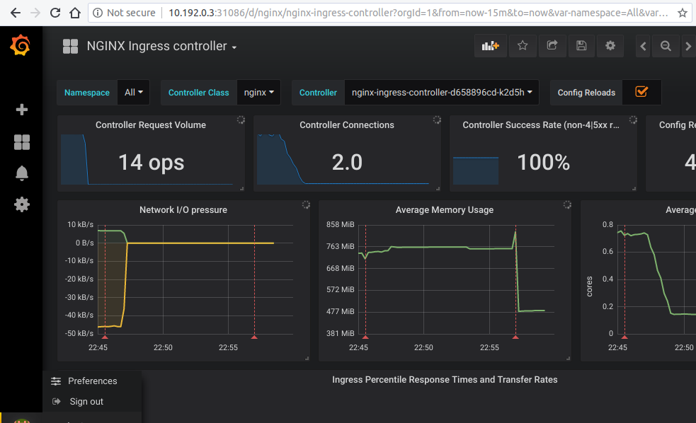

Prometheus and Grafana installation
This tutorial will show you how to install Prometheus and Grafana for scraping the metrics of the NGINX Ingress controller.
!!! important
This example uses emptyDir volumes for Prometheus and Grafana. This means once the pod gets terminated you will lose all the data.
Before You Begin
The NGINX Ingress controller should already be deployed according to the deployment instructions here.
Note that the kustomize bases used in this tutorial are stored in the deploy folder of the GitHub repository kubernetes/ingress-nginx.
Deploy and configure Prometheus Server
The Prometheus server must be configured so that it can discover endpoints of services. If a Prometheus server is already running in the cluster and if it is configured in a way that it can find the ingress controller pods, no extra configuration is needed.
If there is no existing Prometheus server running, the rest of this tutorial will guide you through the steps needed to deploy a properly configured Prometheus server.
Running the following command deploys prometheus in Kubernetes:
kubectl apply --kustomize github.com/kubernetes/ingress-nginx/deploy/prometheus/
Prometheus Dashboard
Open Prometheus dashboard in a web browser:
kubectl get svc -n ingress-nginx
NAME TYPE CLUSTER-IP EXTERNAL-IP PORT(S) AGE
default-http-backend ClusterIP 10.103.59.201 <none> 80/TCP 3d
ingress-nginx NodePort 10.97.44.72 <none> 80:30100/TCP,443:30154/TCP,10254:32049/TCP 5h
prometheus-server NodePort 10.98.233.86 <none> 9090:32630/TCP 1m
Obtain the IP address of the nodes in the running cluster:
kubectl get nodes -o wide
In some cases where the node only have internal IP addresses we need to execute:
kubectl get nodes --selector=kubernetes.io/role!=master -o jsonpath={.items[*].status.addresses[?\(@.type==\"InternalIP\"\)].address}
10.192.0.2 10.192.0.3 10.192.0.4
Open your browser and visit the following URL: http://{node IP address}:{prometheus-svc-nodeport} to load the Prometheus Dashboard.
According to the above example, this URL will be http://10.192.0.3:32630

Grafana
kubectl apply --kustomize github.com/kubernetes/ingress-nginx/deploy/grafana/
kubectl get svc -n ingress-nginx
NAME TYPE CLUSTER-IP EXTERNAL-IP PORT(S) AGE
default-http-backend ClusterIP 10.103.59.201 <none> 80/TCP 3d
ingress-nginx NodePort 10.97.44.72 <none> 80:30100/TCP,443:30154/TCP,10254:32049/TCP 5h
prometheus-server NodePort 10.98.233.86 <none> 9090:32630/TCP 10m
grafana NodePort 10.98.233.87 <none> 3000:31086/TCP 10m
Open your browser and visit the following URL: http://{node IP address}:{grafana-svc-nodeport} to load the Grafana Dashboard. According to the above example, this URL will be http://10.192.0.3:31086
The username and password is admin
After the login you can import the Grafana dashboard from official dashboards

Caveats
Wildcard ingresses
By default request metrics are labeled with the hostname. When you have a wildcard domain ingress, then there will be no metrics for that ingress (to prevent the metrics from exploding in cardinality). To get metrics in this case you need to run the ingress controller with --metrics-per-host=false (you will lose labeling by hostname, but still have labeling by ingress).